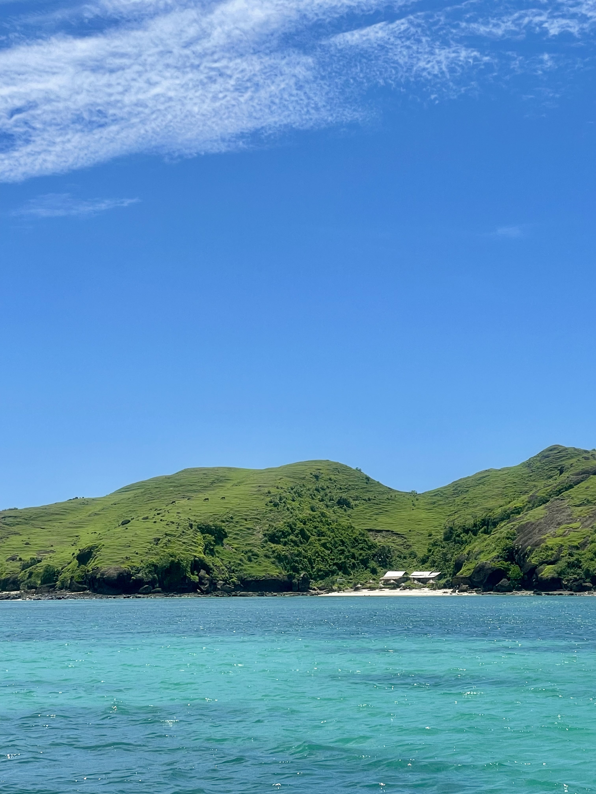

01
Start near the Gilis
We stayed at the Oberoi, up towards the Gili islands, which gave us a great base for getting out onto the water.
From there we could jump on a local boat and explore the islands, each of which had its own personality and atmosphere.

02
Every island feels different
The great thing about the Gilis is that none of them felt quite the same. We loved each one for different reasons and it was worth taking the time to explore rather than choosing just one.